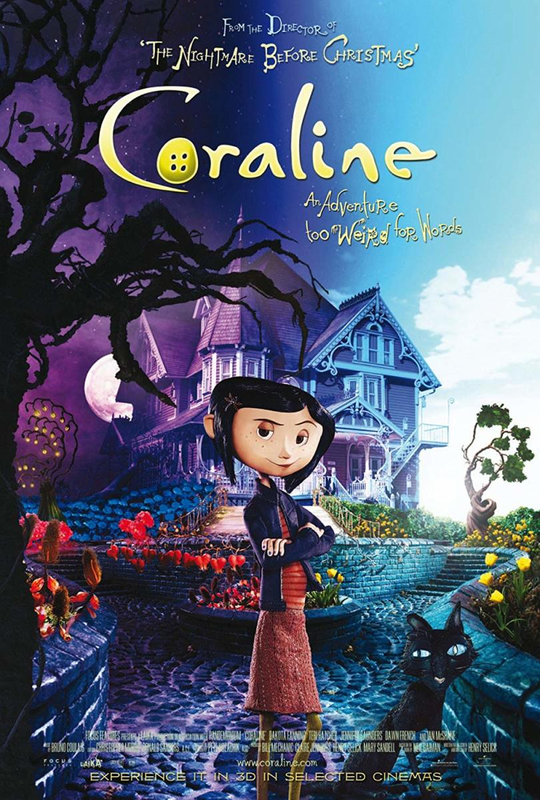
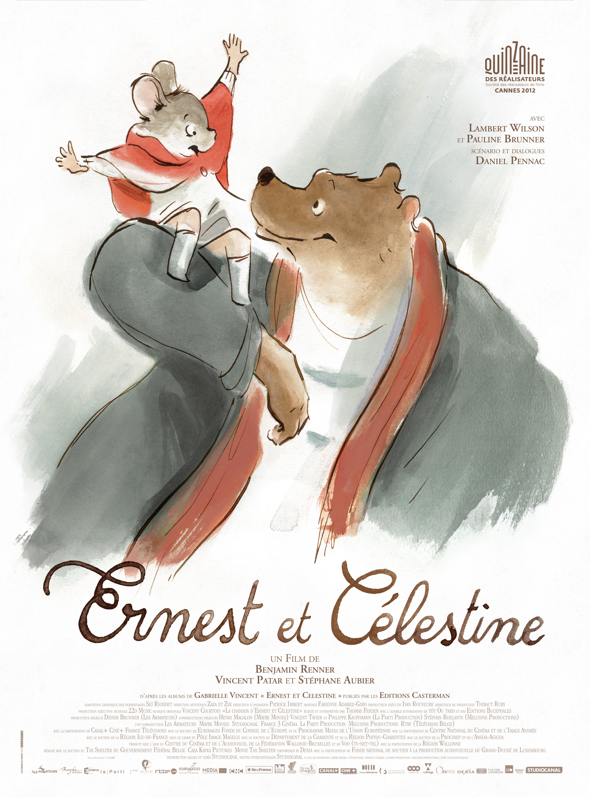
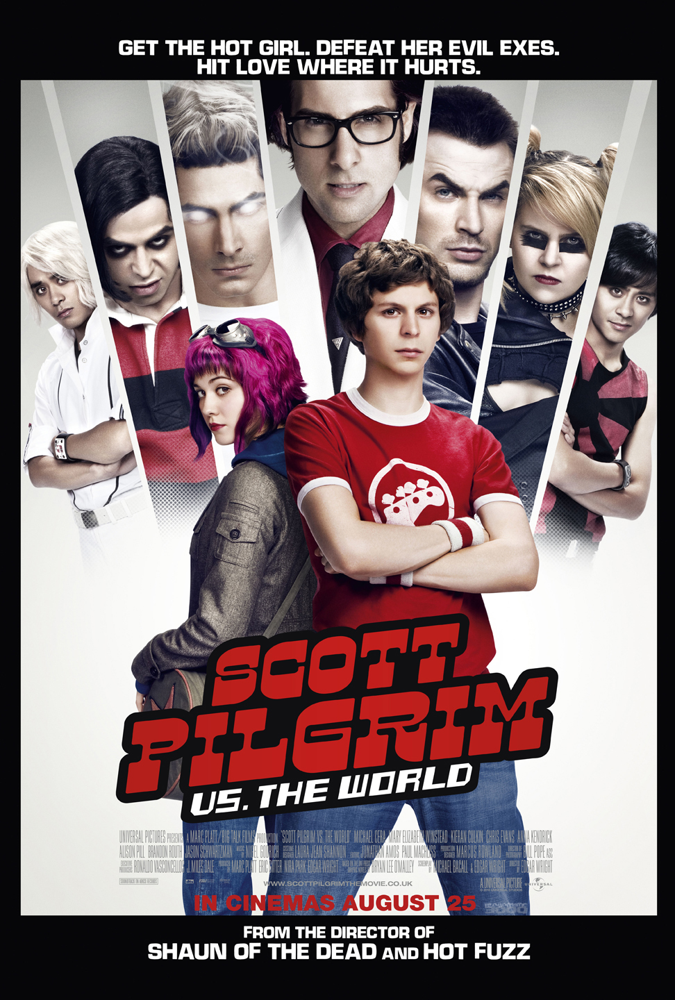

ALL MOVIE REVIEWS
Sorted by genre order
Everything Everywhere All at Once

The best movie of the year in my opinion, it unironically has everything. No pun intended. Great action scenes, great romance, comedy, drama. A great "family" film. One of those movies that really leave an impact. 5/5!
herePirates of the Caribbean : The Curse of the Black Pearl

Despite its flaws, it still remains to be one of my favorites. There is some sort of charm that comes with this movie in particular. It is a strong start to an otherwise mixed franchise, all in good fun! 4.7/5
hereBaby Driver

I love Edgar Wright for his creative camera work, and overall excellent writing in his other films. Baby Driver is a decent action movie that was creative enough. I suppose I am more of a fan of Wrights comedy movies and writing. Not saying it was a bad movie, just decent. 4/5
hereCoraline
The best movie to ever exist. I love stop-motion animation, and I know how hard it is to create such animations. Taking pictures frame by frame. but I think the output is worth it. I love the realistic effect stop-motion gives off, and Coraline gives such a creepy mysterious vibe that I love! 5/5
hereThe Lego Batman Movie

I hate to say I am a DC fan, because if I'm being honest I'm really only a Batman fan, and I will stand by that. This movie is great fun, and gets the batman character completely right. It is one of those movies that even as an adult, I can still laugh and enjoy the story. 4.8/5!
hereErnest & Celestine
I hate to throw around this word, but this movie is truly a hidden gem! The original language is in French, but even in the english translation the acting is great! The animation is beautiful especially with all the water colors! A great low-key movie, 4.8/5
hereScott Pilgrim vs. the World
For a comic book to movie adaptation, this is a great film. Edgar Wright's greatest strength in the camera being almost another person, and apart from the story! Great visuals and actually funny! Comedy can be a hard genre to make a movie in, but this movie delivers! 4.9/5
hereDiary Of a Wimpy Kid

I think this movie is alright, but i honestly prefer the second movie, (Rodrick Rules), to this one. There were so many moments with second hand embarrassment, and I am aware that is the point, but Grey is such a jerk! 3/5
hereJuno

One of the more quirky coming of age movies that is quite funny! I think this is a great movie with moments that are worth watching! Elliot is great in this, and it reminds me of that twee era. Not saying it is peak cinema, but it is certainly worth the time to watch! 4/5
hereLittle Miss Sunshine

An endearing film about a family who goes to a beauty pageant for the kid! Simple plots such as these are great to understand and very straightforward. I found myself actually laughing during this film which is kind of rare! There is something very lighthearted about this film, despite what happens during it (no spoilers), there are genuine moments that we are meant to take seriously and moments where it is very intentionally hilarious! 4.9/5
hereRequiem For A Dream

An amazing movie that I never want to watch again. Truly an unsettling movie experience. I think it is a good thing when a movie makes you feel something. Espcieally if that feeling is intended by the directors and writers. And in the case of this movie, it's intentions are very clear, and its message as well. regarding addiction and drugs. 4.9/5
hereBeing John Malkovich
Spike Jonze is one of those directors you know you are going to get a good film from. His movies all have a consistent style and feel to them and being John Malkovich is no different. It is a bizzare film with an even bizzare concept but Spike Jonze knows how to make it entertaining and palatable. 4.8/5
hereX
Horror is another one of those genres that can be easy to mess up, but X still delivers a satisfying and terrifying experience regardless. It remains to have a campy feel to it, but that is exactly what fans of this genre adore, especially slashers! 4.8/5
hereSuspiria 2018

Compared to the original, I'm glad that they went a somewhat different direction regarding the story. For a remake, it still upholds some originality while also honoring the original movie. In comparison, I much preferred the 1977 version, but that doesn't mean this film doesn't hold any weight. It has some pacing issues but the performances were fantastic, as were the visuals. 4/5
hereIt Follows

The problem with horror in my opinion, is overused and repeated tropes. There are so many carbon copies of the same horror movie over and over again. However, in recent times there have been a splurge of original horror movies. It Follows being one of the first! It has such a unique concept and an interesting and different horror story. There are no jump scares, or cheap tricks, although there are some issues with the overall structure. It is a decent and original horror movie, I can see why so many people like this film! 4/5
hereLa La Land

This movie is the best. Musicals aren't something I personally particularly love. The sudden burst into song or long-drawn-out monologues. It was never really my thing. However, La La Land is a movie in which the songs the story and performances really carry the film. It is a great example of a so-called modern day musical! Everything in my opinion delivers, and it does a great job in building their arcs and also building their romance! 4.9/5!
herePride and Prejudice

One of the best movies of all time not kidding! I am in LOVE with Jane Austen media, but there is something about Joe Wrights direction and Kira Knightly that fits so perfectly within this genre. It is a great romance movie about pining and misinformation. These actors have great chemistry, and it might be one of my favorite adaptations of Pride and Prejudice.! 5/5!!
hereEternal Sunshine of The Spotless Mind

I am a big fan of Charlie Kaufman's writing. Eternal Sunshine of The Spotless Mind, is no exception. It is an interesting love story that's less about falling in love, and more about falling out of it. It's a movie about memories and the impact that relationships have on people. Its dream like tone is consistent thought Joel's "erasing", these dream like sequences can be very wacky at times,but it still remains to be understandable to the audience. It can be genuinely heartbreaking, and it can be considered a great drama in that sense. 5/5!
here